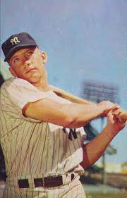

eporte que se practica en un campo cuadrado de 30 m de lado entre dos equipos de nueve jugadores cada uno; se trata de golpear con un bate una pequeña pelota lanzada con la mano por un contrario y recorrer el perímetro de un cuadrado interior del campo pasando por las cuatro esquinas o bases antes que el rival recupere el control del juego; gana el equipo que más veces lo consigue a lo largo de las nueve partes o entradas de que \ consta el partido.
El objetivo del juego es golpear una pelota con un bate (batear), desplazando la pelota a través del campo y correr por el campo interno de tierra (infield) buscando alcanzar la mayor cantidad de bases posibles hasta dar la vuelta a la base desde donde se bateó (home) para lograr anotar el tanto conocido como carrera.
Michael Mantle
Nacimiento: 20 de octubre de 1931, Spavinaw, Oklahoma, Estados Unidos
Fallecimiento: 13 de agosto de 1995, Baylor University Medical Center at Dallas, Dallas, Texas, Estados Unidos
Altura: 1,80m
Peso: 90kg
